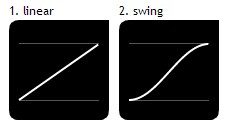

Demo1：全局默认配置：左右箭头、标题栏、按钮、左右滚动，按钮为滑动触发、滚动效果swing、持续时间0.3s、滚动间隔4s
Demo2：用户自定义：标题栏、按钮、左右滚动，不带箭头，按钮为点击触发、滚动效果linear、持续时间0.5s、滚动间隔3s
Demo3：用户自定义：隐藏操作按钮，上下滚动、滚动效果swing、持续时间0.3s、滚动间隔4s
PS: 下面是滚动效果linear、swing的区别(速度曲线)

如果你对这个感兴趣，可参考 jQuery Ui或者 jQuery Easing Plugin
jQuery Ui : http://jqueryui.com/effect/#easing
jQuery Easing Plugin : http://gsgd.co.uk/sandbox/jquery/easing/
Copyright © 2013 By Robin